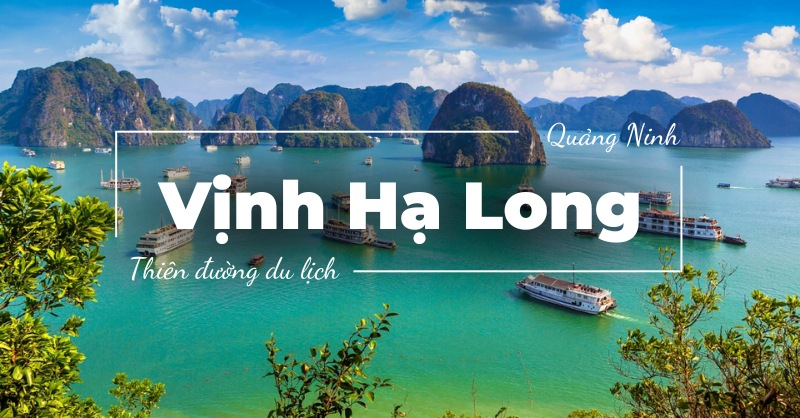
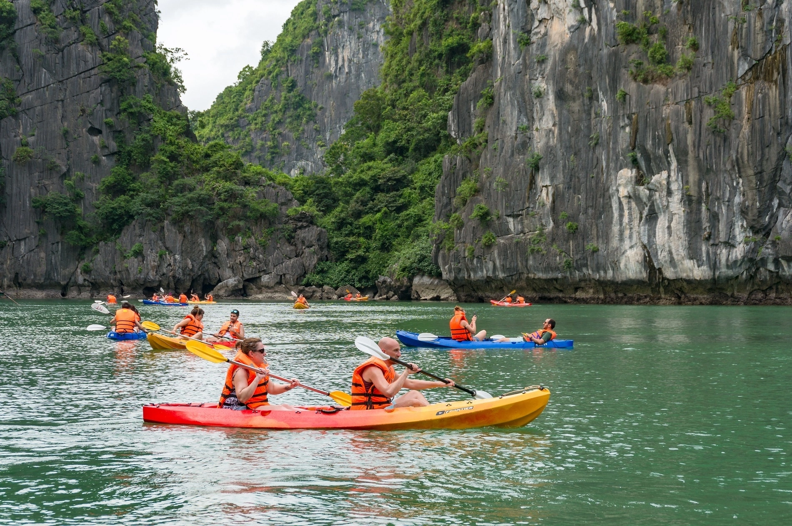
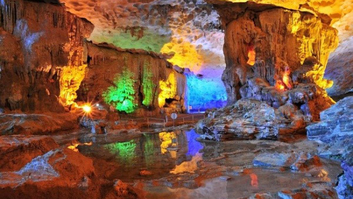
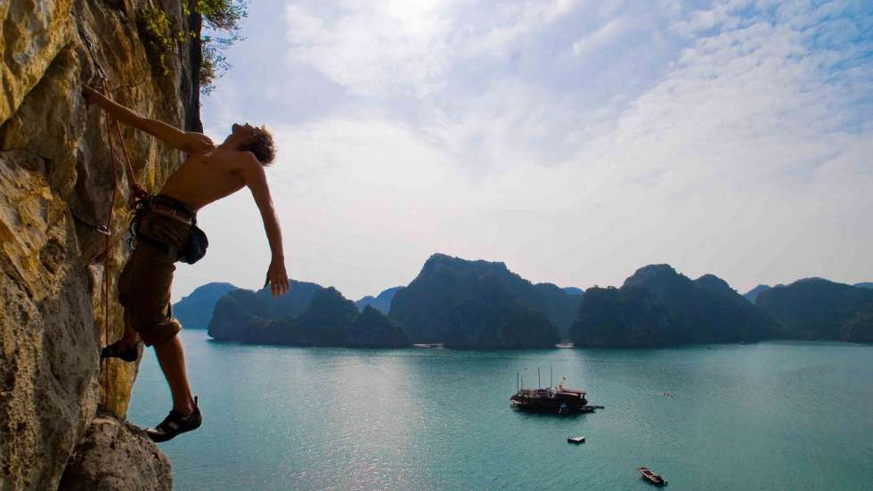

HÀ NỘI
Cảnh sắc vịnh Hạ Long đã trở thành biểu tượng gắn liền với Việt Nam. Những chuyến du thuyền lướt trên làn nước xanh ngọc giữa hàng nghìn hòn đảo và đảo nhỏ hiểm trở, dừng lại ở các hang động kỳ vĩ để du khách tản bộ và chiêm ngưỡng những khối thạch nhũ ấn tượng, đã tồn tại hàng trăm năm. Vẻ đẹp huyền ảo của vịnh Hạ Long đã biến nơi đây thành điểm đến mơ ước của du khách khắp nơi, nhưng vẫn còn những góc yên tĩnh để bạn tìm cho riêng mình.

Những trải nghiệm hàng đầu tại Vịnh Hạ Long
Du ngoạn vịnh
Không gì sánh bằng khoảnh khắc ngắm hoàng hôn buông xuống mặt nước êm đềm của vịnh Hạ Long, rồi sáng hôm sau tỉnh giấc trong khung cảnh bình yên giữa những dãy núi đá vôi. Thư giãn trên boong tàu, ngắm toàn cảnh hùng vĩ xung quanh, là điểm nhấn của nhiều chuyến đi.
Khám phá làng chài nổi
Vịnh Hạ Long không chỉ là Di sản Thế giới UNESCO, mà còn là nơi sinh sống của nhiều cộng đồng ngư dân đã gắn bó với mặt nước suốt hàng thế kỷ. Hãy tham gia tour thuyền tham quan làng chài nổi để khám phá lối sống độc đáo và hiếm có này.
Chèo kayak
Dù bạn chưa từng chèo kayak, cũng đừng bỏ lỡ cơ hội tự mình len lỏi giữa khung cảnh biển tuyệt đẹp của Hạ Long. Thời điểm lý tưởng nhất là trước hoàng hôn, khi bạn có thể chèo qua các đầm nước yên ả và tiếp cận gần hơn những con thuyền đánh cá.

Khám phá hang động
Bên dưới lớp đá và rừng cây rậm rạp, nhiều khối núi đá vôi cổ xưa của Hạ Long đã được dòng nước và mưa gió bào mòn tạo thành các hang động kỳ thú. Bạn có thể đi bộ vào bên trong để chiêm ngưỡng — có hang nhỏ hẹp phải cúi người mới qua, có hang lại rộng lớn như một quảng trường ngầm.

Thử sức leo núi
Vịnh Hạ Long có vô số tuyến leo núi dành cho những người đam mê chinh phục. Môn leo tự do trên vách đá cao phía trên mặt nước (deep water soloing) đang ngày càng phổ biến tại vịnh Hạ Long và vịnh Lan Hạ, đặc biệt ở đảo Bươm Bướm.

Thời tiết ở Hạ Long
Khí hậu vịnh Hạ Long mát mẻ với bầu trời quang đãng từ tháng 9 đến tháng 11. Từ tháng 12 đến tháng 3, sương mù phủ khiến khung cảnh thêm phần huyền bí. Tháng 4 và tháng 5 có nhiều nắng kèm làn gió mát dễ chịu. Mùa mưa từ tháng 6 đến tháng 8 khiến việc tham quan đôi khi khó dự đoán.
Di chuyển tại Hạ Long
Phần lớn du khách chọn tour trọn gói, bao gồm cả phương tiện đi lại từ Hà Nội. Nếu đi tự túc, bạn có thể bắt xe buýt đến thành phố Hạ Long hoặc Hải Phòng rồi đi taxi ra cảng. Ngoài ra, có thể thuê thủy phi cơ bay thẳng từ sân bay Nội Bài đến Hạ Long chỉ trong 45 phút. Khám phá vịnh Hạ Long thuận tiện nhất là bằng tàu. Nếu muốn ngắm cảnh từ trên cao, bạn có thể đặt chuyến bay thủy phi cơ 15 phút vòng quanh vịnh. Tại thành phố Hạ Long, taxi là lựa chọn đơn giản để di chuyển trong nội đô.